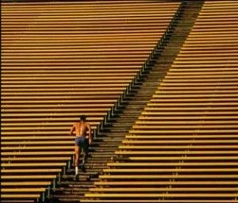

Mijn kenmerken zijn

Doorzettingsvermogen
.jpeg)
Vasthoudend
Efficiënt
Creatief

Humor
Software Developer
Mijn naam is Sam, ik ben 17 jaar, ik studeer software development en ik zoek een stageplek!
Mijn naam is Sam, en ik ben een enthousiaste softwareontwikkelaar in opleiding aan het MBO College Almere. Ik heb me verdiept in Java, JavaScript, PHP en MySQL Workbench. Door mijn studie en projectwerk heb ik niet alleen technische vaardigheden opgedaan, maar ook geleerd hoe belangrijk teamwork, communicatie en doorzettingsvermogen zijn in deze sector. Mijn doel is om een full stack ontwikkelaar te worden, altijd op zoek naar nieuwe kennis en het leren van nieuwe technieken. Neem gerust een kijkje bij mijn projecten om een beeld krijgen van mijn werk en de reis die ik als ontwikkelaar heb afgelegd. Buiten de codering vind ik het leuk om te sporten en muziek te luisteren.
Doorzettingsvermogen
Vasthoudend
Efficiënt
Creatief
Humor
Nederlands
Engels
Kantonees/Mandarijn
Software Development (mbo niveau 4), MBO College Almere - 2023-heden
VMBO Porteum, Lelystad - 2019 - 2023
Horecamedewerker bij Fashion Café - sinds 10 maanden
Stage bij Promo Trade - 2 weken
Horecamedewerker bij Patat Lin - 3 maanden
Vulploegmedewerker bij Plus - 1 jaar